Unit 4: Cell Communication and Cell Cycle
Signal Transduction Pathway: Cells constantly recieve, process and response to signals to survive and function properly
Ligand : A signaling molecule acting as an chemical messenager to a cell
Receptor : A protein on the cell membrane that can bind to a specific ligand which activates the signal transduction pathway
Target Cell : the cell with a receptor that can recieve the ligand
3 Main Steps
--Reception: The first step in cell signaling, when the receptor binds to the ligand and changes shape which initiates the process inside the cell, after the ligand binds to the a G-Protein Coupled Receptor, it signals GDP to turn into GTP and subunit alpha of the enzyme detaches and carries it to adenylyl cyclase to transfer ATP from GTP, tranforming it back into GDP and create cAMP which is an second messenager that triggers the activation of protein kinase A (PKA) and leads to transduction then subunit alpha brings GDP back to G-Protein Coupled Receptor
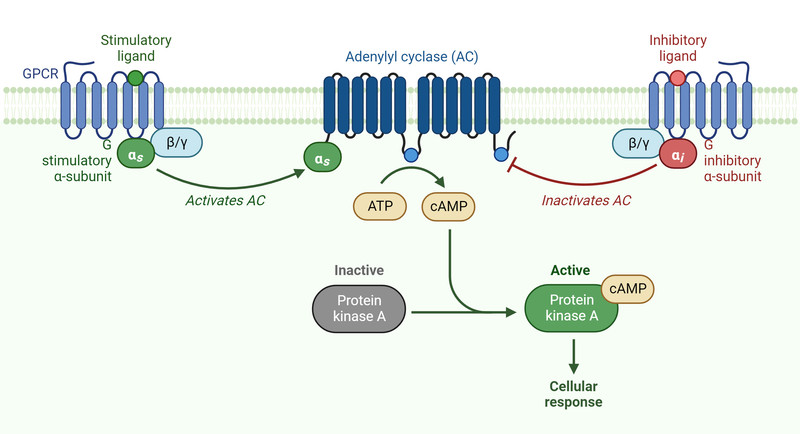
--Transduction: cAMP activates PKA (Protein Kinase A) which starts the phosphorylation cascade which amplifies the signal by activating multiple other kinases from one kinase by phosphorylation (adding a phosphate group, in this case from ATP to activate protein kinase) to reach further inside the cell to activate cellular response specific to the ligand
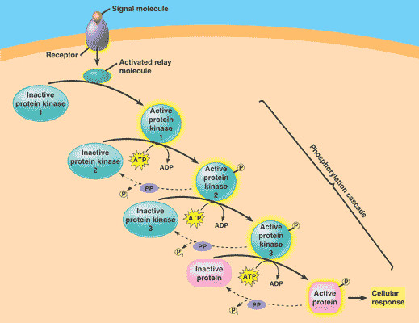
--Response: the signal reaches it final target which triggers a cellular response that can be enzyme activation, gene expression, cell division, apoptosis (programmed cell death)
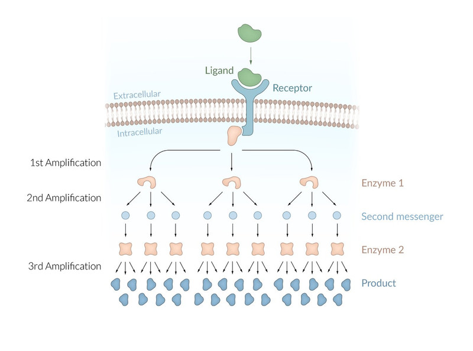
Types of Signaling:
| Type | Description | Image |
| Direct Contact | when the release of ligand binds to a cell that physically touching the original cell through gap junctions | 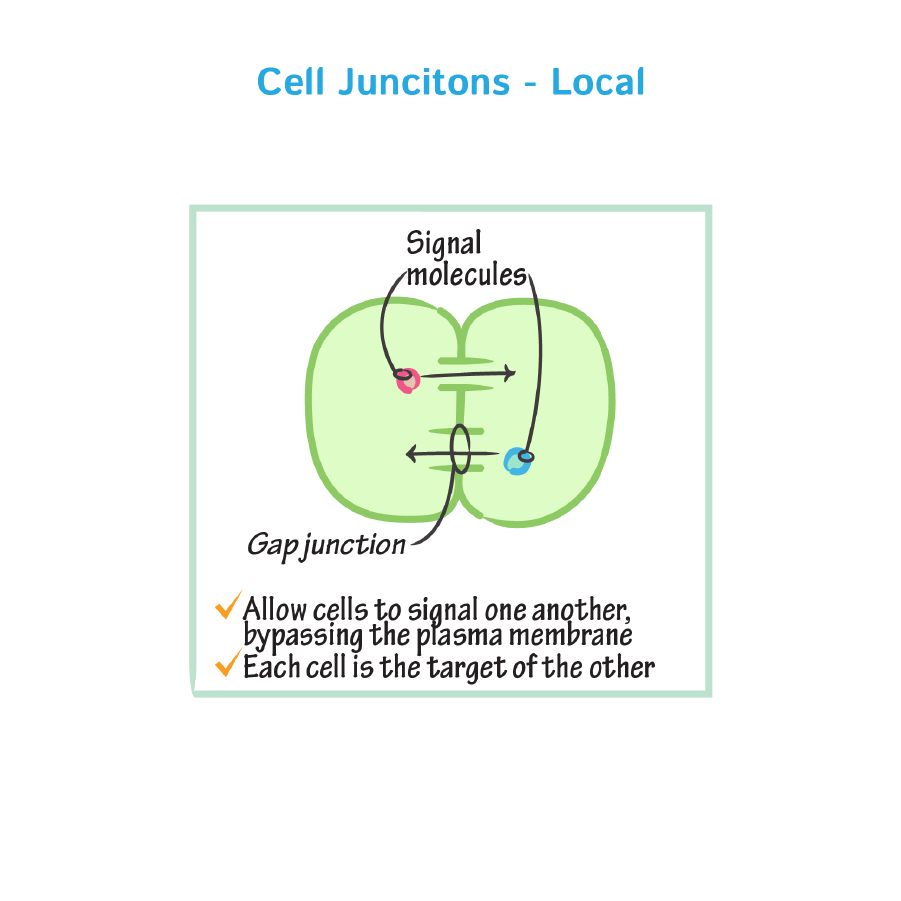 |
| Autocrine | The cell releases a ligand that binds to surface receptors of the same cell | 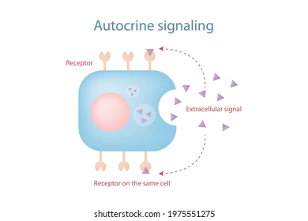 |
| Paracrine | The cell releases a ligand that binds to the cell directly adjacent to it but not touching each other | 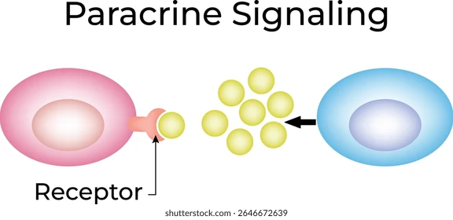 |
| Synaptic Signaling | Neuron releases neurotransmitters into the synapse (synaptic gap / synaptic cleft) which acts as a ligand that binds to the receptor of an adjacent neuron or muscle to transmit a signal | 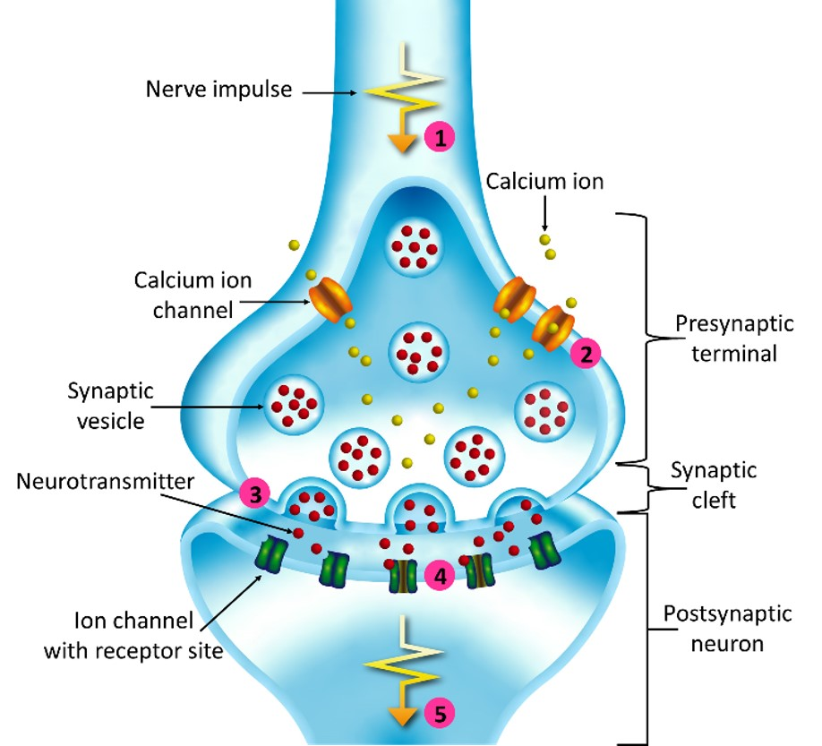 |
| Endocrine | Long Distance Communication, A specialized cell that releases hormones into the blood stream that travels to the target cell that far away from the original cell | 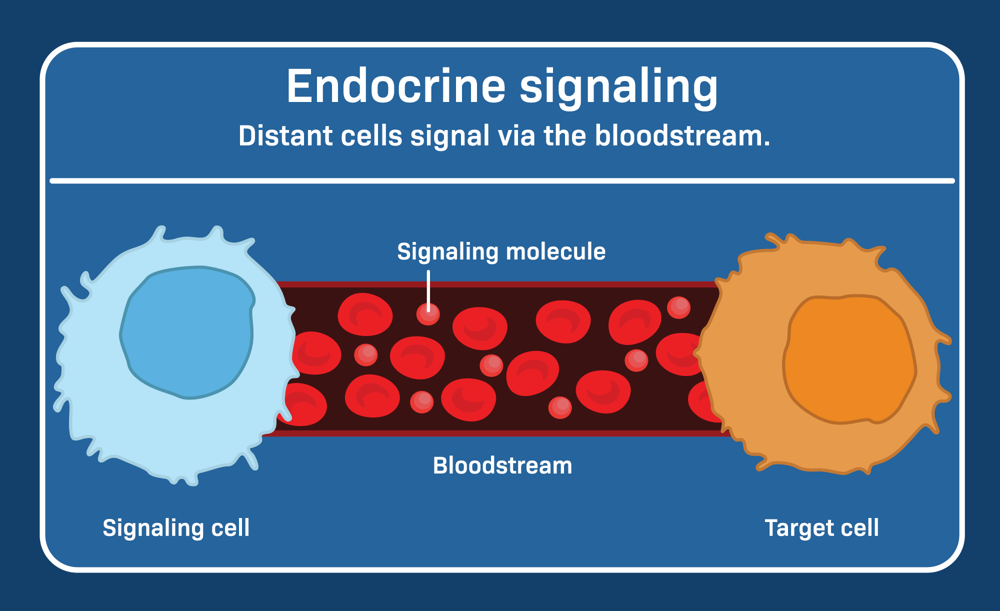 |
Feedback Mechanism:
- Positive Feedback : To amplify the signal and cause the process to completion
- Negative Feedback : To maintain stability or homeostasis
Cell Division :
--Binary Fission : The process of how prokaryote cells complete cell division
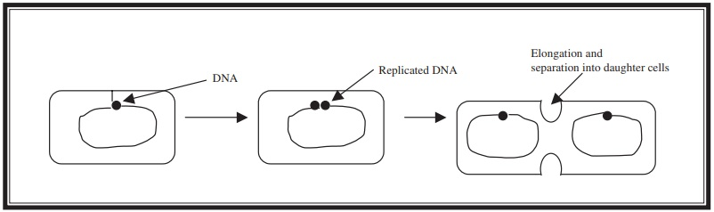
The chromosome of the cell is replicated to prepare for separation. The cells separate by elongating until they are double their original size which breaks apart at the middle creating two identical daughter cells
--Cell Cycle : The squence of events that leads to cell division in eukaryote cells
G0 phase is when the cell stops the cycle due to a lack of materials/nutrients or DNA damage which then the cell starts apoptosis, programmed cell death to prevent cancerous cells
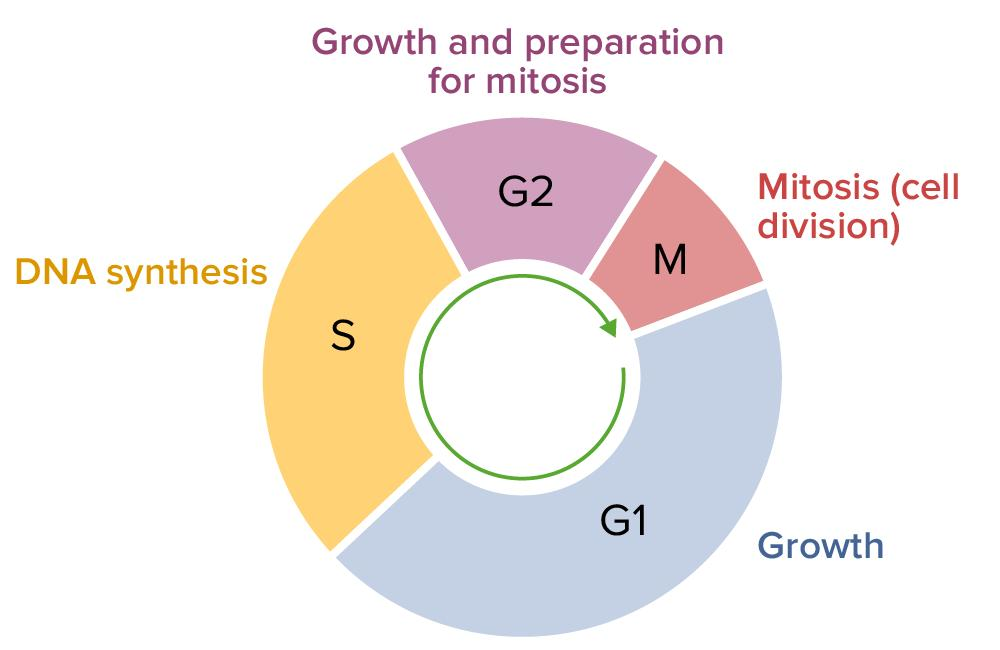
--Stages
| Phases | Description |
| G1 Phase (Growth Phase 1 / Interphase) | The cell prepares for synthesis stage by ensuring enough necessasry materials are present |
| S Phase (Synthesis Phase / Interphase) | The DNA is replicated so all daughter cells have a complete set of chromosomes at the end of cell cycle |
| G2 Phase (Growth Phase 2 / Interphase) | The cell prepares itself for mitosis or meiosis by ensuring necessary raw materials are present for physical separation into daughter cells |
| M Phase (Mitotic Phase) | The stage that the cell separates into two new cells |
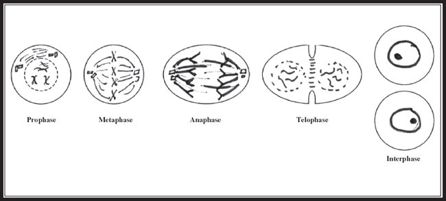
Interphase : The cell spends ~90% of the cycle in this phase and the other ~10% in mitosis
Prophase 1 : The nucleus and nucleolus disappears, chromosomes appear as two identical connected sister chromatids (a identical half of a replicated chromosome). mitotic spindle (used to pull chromatids apart) forms and centrioles (used to organize mitotic spindle) moves to opposite sides.
Metaphase 1 : Chromatids lines up to the middle of the cell and become ready to split apart.
Anaphase 1 : Spindle apparatus pulls the chromatids apart and microtubules move them to opposite sides which results in complete sets of chromosomes on each sides and splits apart.
Telophase 1 : The nuclei forms in the newly split cells and nuleoli reappears
Cytokinesis 1 : The actual splitting of cell, daughter cells split apart fully, in animal cells, they form cleavage furrow, in plant cells, they form cell plates.
| Vocab | Definition |
| Cell Plate | Plant cell structure that made in the golgi apparatus, composed of vesicles that fused together along the middle of the cell which comepletes the separation process. |
| Cleavage Furrow | Grooves formed (mostly in animal cells) between two daughter cells that pinches together to complete the separation process of two cells in mitosis |
| Mitotic Spindle | the apparatus made from microtubules assisting in physical separation of the cell's chromosome during mitosis |